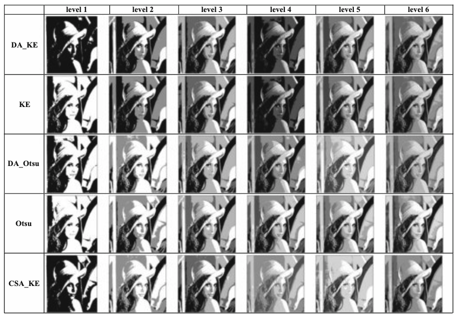

Publications
DOTGraph: CLIP-Driven Feature Disentanglement and Optimal Transport based Graph Learning for Few-Shot Segmentation
Under Review, WACV 2026
TaSP: Target Style Guided Pruning for Cross Domain Few Shot Segmentation
Under Review, IEEE TIP
Granulated Mask-RCNN and Eye Detection Index (EDI) for detection and localization of the eye of tropical cyclones from satellite imagery
Journal of Data, Information and Management 2024
SCENIC: An Area and Energy-Efficient CNN-based Hardware Accelerator for Discernable Classification of Brain Pathologies using MRI
VLSID 2022
Moth-flame Optimization based Deep Feature Selection for Cardiovascular disease Detection using ECG Signal
Handbook of Moth-Flame Optimization Algorithm, 2022
An Ensemble of CNN Models for Parkinson's Disease Detection Using DaTscan Images
Diagnostics, 2022

Breast cancer detection from thermal images using a Grunwald-Letnikov-aided Dragonfly algorithm-based deep feature selection method
Computers in Biology and Medicine, 2021

Prediction of COVID-19 from Chest CT Images Using an Ensemble of Deep Learning Models
Applied Sciences, 2021

Multi-Level Image Segmentation Using Kapur Entropy Based Dragonfly Algorithm
ISDA 2022